Grouped DataMẫu số liệu ghép nhóm
Grade 11 · Topic: StatisticsLớp 11 · Chủ đề: Các số đặc trưng của mẫu số liệu ghép nhóm
1Lesson IntroductionGiới thiệu bài học
Learning goalsMục tiêu bài học
By the end of this lesson you can:
Sau bài học này, em có thể:
recognise grouped data, groups, frequencies and relative frequencies;
nhận biết mẫu số liệu ghép nhóm, nhóm số liệu, tần số, tần suất;
make a frequency table and a cumulative table;
lập bảng tần số và bảng tần số tích lũy;
read a histogram and find the midpoint of a group;
đọc biểu đồ cột (biểu đồ tần số) và tìm giá trị đại diện của nhóm;
describe real data in simple English.
nhận xét số liệu thực tế bằng tiếng Anh đơn giản.
2Mathematical VocabularyTừ vựng Toán học
grouped data – data put into groups (intervals) instead of single values.
mẫu số liệu ghép nhóm – mẫu số liệu được chia thành các nhóm (khoảng) thay vì giá trị riêng lẻ.
group (class) – one interval of the data, such as \([10;20)\).
nhóm số liệu – một khoảng của số liệu, chẳng hạn \([10;20)\).
frequency – the number of data values in a group.
tần số – số giá trị của mẫu số liệu thuộc một nhóm.
relative frequency – frequency divided by the total, often in percent.
tần suất – tần số chia cho tổng số giá trị, thường viết bằng phần trăm.
frequency table – a table showing each group and its frequency.
bảng tần số – bảng ghi mỗi nhóm và tần số của nhóm đó.
midpoint (representative value) – the middle of a group: \(\dfrac{a+b}{2}\).
giá trị đại diện – giá trị chính giữa của nhóm: \(\dfrac{a+b}{2}\).
cumulative frequency – the number of values up to the end of a group.
tần số tích lũy – số giá trị từ nhóm đầu đến hết nhóm đang xét.
histogram – a chart with bars for each group.
biểu đồ cột (biểu đồ tần số) – biểu đồ có một cột cho mỗi nhóm.
sample size – the total number of data values, \(n\).
cỡ mẫu – tổng số giá trị của mẫu số liệu, \(n\).
3Useful English PhrasesCụm từ tiếng Anh thường gặp
Make a frequency table.
Lập bảng tần số.
Which group has the highest frequency?
Nhóm nào có tần số lớn nhất?
How many values are less than 20?
Có bao nhiêu giá trị nhỏ hơn 20?
the percentage of students
tỉ lệ phần trăm học sinh
4Prerequisite ReviewÔn tập kiến thức nền
A data value is a number we measure, for example a height. To read a table, find the group first and then its frequency.
Giá trị số liệu là số ta đo được, chẳng hạn chiều cao. Để đọc bảng, tìm nhóm trước rồi đọc tần số của nhóm.
5TheoryLý thuyết
5.1 Grouped dataMẫu số liệu ghép nhóm
DefinitionĐịnh nghĩa
When there are many different values, we divide them into groups \([a_1;a_2),[a_2;a_3),\dots\) of equal width. The frequency \(n_i\) of a group is the number of values in it. The total \(n=n_1+n_2+\dots\) is the sample size.
Khi có nhiều giá trị khác nhau, ta chia chúng thành các nhóm số liệu \([a_1;a_2),[a_2;a_3),\dots\) có độ rộng bằng nhau. Tần số \(n_i\) của một nhóm là số giá trị thuộc nhóm; tổng \(n=n_1+n_2+\dots\) là cỡ mẫu.
A value equal to the right end \(a_{i+1}\) goes to the next group.
Giá trị bằng đầu mút phải \(a_{i+1}\) được xếp vào nhóm kế tiếp.
5.2 Frequency tablesBảng tần số, tần suất và tần số tích lũy
FormulasCông thức
The cumulative frequency of a group is \(n_1+\dots+n_i\): the number of values smaller than the right end of the group.
Tần số tích lũy của một nhóm là \(n_1+\dots+n_i\): số giá trị nhỏ hơn đầu mút phải của nhóm đó.
| Group | \([0;\,10)\) | \([10;\,20)\) | \([20;\,30)\) | \([30;\,40)\) | Total |
|---|---|---|---|---|---|
| Midpoint \(x_i\) | \(5\) | \(15\) | \(25\) | \(35\) | |
| Frequency \(n_i\) | \(4\) | \(12\) | \(40\) | \(24\) | \(n=80\) |
| Relative frequency \(f_i\) | \(5\%\) | \(15\%\) | \(50\%\) | \(30\%\) | \(100\%\) |
| Cumulative frequency | \(4\) | \(16\) | \(56\) | \(80\) |
| Nhóm | \([0;\,10)\) | \([10;\,20)\) | \([20;\,30)\) | \([30;\,40)\) | Cộng |
|---|---|---|---|---|---|
| Giá trị đại diện \(x_i\) | \(5\) | \(15\) | \(25\) | \(35\) | |
| Tần số \(n_i\) | \(4\) | \(12\) | \(40\) | \(24\) | \(n=80\) |
| Tần số tương đối \(f_i\) | \(5\%\) | \(15\%\) | \(50\%\) | \(30\%\) | \(100\%\) |
| Tần số tích lũy | \(4\) | \(16\) | \(56\) | \(80\) |
5.3 Midpoints and histogramsGiá trị đại diện và biểu đồ cột
MidpointGiá trị đại diện
The midpoint of \([a;b)\) is \(x=\dfrac{a+b}{2}\). It stands for all values in the group when we need one number. In a histogram, the height of each bar is the frequency (or relative frequency) of its group.
Giá trị đại diện của nhóm \([a;b)\) là \(x=\dfrac{a+b}{2}\); dùng khi cần một số thay cho cả nhóm. Trong biểu đồ cột (biểu đồ tần số), chiều cao mỗi cột là tần số (hoặc tần suất) của nhóm.
Watch out!Lưu ý
Groups must not overlap and must cover all the data. The relative frequencies add up to \(100\%\).
Các nhóm không được chồng lên nhau và phải phủ hết số liệu. Các tần suất cộng lại bằng \(100\%\).
6Worked ExamplesVí dụ có lời giải
ExampleVí dụ 1BasicCơ bản – Groups and midpointsNhóm và giá trị đại diện
Heights (cm) are grouped as \([150;155),[155;160),[160;165),[165;170)\). Find the width and the midpoint of each group.
Chiều cao (cm) chia thành các nhóm \([150;155),[155;160),[160;165),[165;170)\). Tìm độ rộng và giá trị đại diện của mỗi nhóm.
Analysis: Width \(=b-a\); midpoint \(=\dfrac{a+b}{2}\).
Phân tích: Độ rộng \(=b-a\); giá trị đại diện \(=\dfrac{a+b}{2}\).
Every group has width \(5\).
Mỗi nhóm có độ rộng \(5\).
Midpoints: \(152.5;\ 157.5;\ 162.5;\ 167.5\).
Giá trị đại diện: \(152{,}5;\ 157{,}5;\ 162{,}5;\ 167{,}5\).
Width 5; midpoints \(152.5,157.5,162.5,167.5\).
Độ rộng 5; giá trị đại diện \(152{,}5;\ 157{,}5;\ 162{,}5;\ 167{,}5\).
ExampleVí dụ 2BasicCơ bản – Make a frequency tableLập bảng tần số
Test scores of 16 students: \(3,7,12,14,15,18,21,22,24,25,27,29,31,33,35,38\). Group them as \([0;10),[10;20),[20;30),[30;40)\).
Điểm của 16 học sinh: \(3,7,12,14,15,18,21,22,24,25,27,29,31,33,35,38\). Chia thành các nhóm \([0;10),[10;20),[20;30),[30;40)\).
Analysis: Count the values in each group.
Phân tích: Đếm số giá trị trong mỗi nhóm.
\([0;10)\): 3, 7 → 2 values. \([10;20)\): 12, 14, 15, 18 → 4.
\([0;10)\): 3, 7 → 2 giá trị. \([10;20)\): 12, 14, 15, 18 → 4.
\([20;30)\): 21, 22, 24, 25, 27, 29 → 6. \([30;40)\): 31, 33, 35, 38 → 4. Total \(16\).
\([20;30)\): 21, 22, 24, 25, 27, 29 → 6. \([30;40)\): 31, 33, 35, 38 → 4. Tổng \(16\).
Frequencies \(2,4,6,4\).
Các tần số \(2,4,6,4\).
ExampleVí dụ 3IntermediateTrung bình – Relative frequencyTần suất
Use the table of Example 2. Find the relative frequency of each group and the percentage of students with a score below 20.
Dùng bảng ở Ví dụ 2. Tính tần suất của mỗi nhóm và tỉ lệ học sinh có điểm dưới 20.
Analysis: \(f_i=\dfrac{n_i}{16}\cdot100\%\).
Phân tích: \(f_i=\dfrac{n_i}{16}\cdot100\%\).
\(12.5\%,\ 25\%,\ 37.5\%,\ 25\%\).
\(12{,}5\%;\ 25\%;\ 37{,}5\%;\ 25\%\).
Below 20: \(2+4=6\) students, \(\dfrac{6}{16}=37.5\%\).
Dưới 20: \(2+4=6\) học sinh, \(\dfrac{6}{16}=37{,}5\%\).
37.5% of students scored below 20.
37,5% học sinh có điểm dưới 20.
ExampleVí dụ 4IntermediateTrung bình – Cumulative frequencyTần số tích lũy
A table has groups \([0;5),[5;10),[10;15),[15;20)\) with frequencies \(3,8,10,4\). Find the cumulative frequencies. How many values are less than 15?
Bảng có các nhóm \([0;5),[5;10),[10;15),[15;20)\) với tần số \(3,8,10,4\). Tìm tần số tích lũy. Có bao nhiêu giá trị nhỏ hơn 15?
Analysis: Add the frequencies one by one.
Phân tích: Cộng dồn các tần số.
Cumulative: \(3,\ 11,\ 21,\ 25\).
Tần số tích lũy: \(3,\ 11,\ 21,\ 25\).
Values less than 15: the cumulative frequency of \([10;15)\), which is \(21\).
Số giá trị nhỏ hơn 15 là tần số tích lũy của nhóm \([10;15)\), bằng \(21\).
21 values.
21 giá trị.
ExampleVí dụ 5AdvancedNâng cao – Describe real dataNhận xét số liệu thực tế
Daily study time (minutes) of 40 students: \([0;30)\): 4, \([30;60)\): 12, \([60;90)\): 16, \([90;120)\): 8. Find the group with the highest frequency, the percentage studying 60 minutes or more, and write one sentence in English.
Thời gian tự học mỗi ngày (phút) của 40 học sinh: \([0;30)\): 4, \([30;60)\): 12, \([60;90)\): 16, \([90;120)\): 8. Tìm nhóm có tần số lớn nhất, tỉ lệ học từ 60 phút trở lên và viết một câu nhận xét bằng tiếng Anh.
Analysis: Highest frequency; add the last two groups.
Phân tích: Tần số lớn nhất; cộng hai nhóm cuối.
Highest frequency: \([60;90)\) with 16 students.
Tần số lớn nhất: nhóm \([60;90)\) với 16 học sinh.
\(60\) minutes or more: \(16+8=24\) students, \(\dfrac{24}{40}=60\%\).
Từ 60 phút trở lên: \(16+8=24\) học sinh, \(\dfrac{24}{40}=60\%\).
Sample sentence: “Most students study between 60 and 90 minutes a day.”
Câu mẫu: “Most students study between 60 and 90 minutes a day.” (Đa số học sinh tự học từ 60 đến 90 phút mỗi ngày.)
Group \([60;90)\); 60%.
Nhóm \([60;90)\); 60%.
7PracticeBài tập luyện tập
A. Multiple ChoiceA. Trắc nghiệm nhiều lựa chọn
| Lifetime (h) | \([1000;\,1200)\) | \([1200;\,1400)\) | \([1400;\,1600)\) | \([1600;\,1800)\) | \([1800;\,2000)\) | Total |
|---|---|---|---|---|---|---|
| Bulbs | \(3\) | \(5\) | \(3\) | \(8\) | \(5\) | \(n=24\) |
| Tuổi thọ (giờ) | \([1000;\,1200)\) | \([1200;\,1400)\) | \([1400;\,1600)\) | \([1600;\,1800)\) | \([1800;\,2000)\) | Cộng |
|---|---|---|---|---|---|---|
| Số bóng đèn | \(3\) | \(5\) | \(3\) | \(8\) | \(5\) | \(n=24\) |
Answer: a. Add the frequencies of the groups before 1400: \(3+5=8\).
Đáp án a. Cộng tần số các nhóm đứng trước mốc 1400: \(3+5=8\).
| Electricity (kWh) | \([200;\,250)\) | \([250;\,300)\) | \([300;\,350)\) | \([350;\,400)\) | Total |
|---|---|---|---|---|---|
| Households | \(5\) | \(11\) | \(5\) | \(4\) | \(n=25\) |
| Điện năng (kWh) | \([200;\,250)\) | \([250;\,300)\) | \([300;\,350)\) | \([350;\,400)\) | Cộng |
|---|---|---|---|---|---|
| Số hộ | \(5\) | \(11\) | \(5\) | \(4\) | \(n=25\) |
Answer: c. The largest frequency is \(11\), in the group \([250;\,300)\).
Đáp án c. Tần số lớn nhất là \(11\), ở nhóm \([250;\,300)\).
| Score | \([20;\,25)\) | \([25;\,30)\) | \([30;\,35)\) | \([35;\,40)\) | Total |
|---|---|---|---|---|---|
| Students | \(6\) | \(10\) | \(13\) | \(11\) | \(n=40\) |
| Điểm | \([20;\,25)\) | \([25;\,30)\) | \([30;\,35)\) | \([35;\,40)\) | Cộng |
|---|---|---|---|---|---|
| Số học sinh | \(6\) | \(10\) | \(13\) | \(11\) | \(n=40\) |
Answer: b. \(x=\dfrac{35+40}{2}=37.5\).
Đáp án b. \(x=\dfrac{35+40}{2}=37{,}5\).
B. True or FalseB. Đúng hoặc sai
| Waiting (min) | \([0;\,5)\) | \([5;\,10)\) | \([10;\,15)\) | \([15;\,20)\) | Total |
|---|---|---|---|---|---|
| Customers | \(8\) | \(5\) | \(5\) | \(6\) | \(n=24\) |
| Thời gian chờ (phút) | \([0;\,5)\) | \([5;\,10)\) | \([10;\,15)\) | \([15;\,20)\) | Cộng |
|---|---|---|---|---|---|
| Số khách hàng | \(8\) | \(5\) | \(5\) | \(6\) | \(n=24\) |
In \([a;\,b)\) the left end belongs to the group and the right end does not, so 5 goes to \([5;\,10)\).
Trong nhóm \([a;\,b)\) đầu mút trái thuộc nhóm, đầu mút phải thì không; nên 5 thuộc nhóm \([5;\,10)\).
| Time (min) | \([0;\,30)\) | \([30;\,60)\) | \([60;\,90)\) | \([90;\,120)\) | Total |
|---|---|---|---|---|---|
| Teenagers | \(6\) | \(18\) | \(7\) | \(9\) | \(n=40\) |
| Thời gian (phút) | \([0;\,30)\) | \([30;\,60)\) | \([60;\,90)\) | \([90;\,120)\) | Cộng |
|---|---|---|---|---|---|
| Số học sinh | \(6\) | \(18\) | \(7\) | \(9\) | \(n=40\) |
\(\dfrac{16}{40}\cdot100\%=40\%\).
\(\dfrac{16}{40}\cdot100\%=40\%\).
C. Short AnswerC. Trả lời ngắn
| Age | \([30;\,40)\) | \([40;\,50)\) | \([50;\,60)\) | \([60;\,70)\) | Total |
|---|---|---|---|---|---|
| Employees | \(x\) | \(17\) | \(10\) | \(10\) | \(n=44\) |
| Tuổi | \([30;\,40)\) | \([40;\,50)\) | \([50;\,60)\) | \([60;\,70)\) | Cộng |
|---|---|---|---|---|---|
| Số nhân viên | \(x\) | \(17\) | \(10\) | \(10\) | \(n=44\) |
Enter a whole number.
Nhập một số nguyên.
\(x=44-(17+10+10)=7\).
\(x=44-(17+10+10)=7\).
| Height (cm) | \([150;\,155)\) | \([155;\,160)\) | \([160;\,165)\) | \([165;\,170)\) | Total |
|---|---|---|---|---|---|
| Students | \(9\) | \(12\) | \(15\) | \(14\) | \(n=50\) |
| Chiều cao (cm) | \([150;\,155)\) | \([155;\,160)\) | \([160;\,165)\) | \([165;\,170)\) | Cộng |
|---|---|---|---|---|---|
| Số học sinh | \(9\) | \(12\) | \(15\) | \(14\) | \(n=50\) |
Enter a number.
Nhập một số.
\(\dfrac{36}{50}\cdot100\%=72\%\).
\(\dfrac{36}{50}\cdot100\%=72\%\).
A. Multiple ChoiceA. Trắc nghiệm nhiều lựa chọn
| Height (cm) | \([155;\,165)\) | \([165;\,175)\) | \([175;\,185)\) | \([185;\,195)\) | Total |
|---|---|---|---|---|---|
| Students | \(3\) | \(7\) | \(4\) | \(6\) | \(n=20\) |
| Chiều cao (cm) | \([155;\,165)\) | \([165;\,175)\) | \([175;\,185)\) | \([185;\,195)\) | Cộng |
|---|---|---|---|---|---|
| Số học sinh | \(3\) | \(7\) | \(4\) | \(6\) | \(n=20\) |
Answer: b. Add the frequencies of the groups before 175: \(3+7=10\).
Đáp án b. Cộng tần số các nhóm đứng trước mốc 175: \(3+7=10\).
| Income | \([8;\,10)\) | \([10;\,12)\) | \([12;\,14)\) | \([14;\,16)\) | Total |
|---|---|---|---|---|---|
| Workers | \(6\) | \(9\) | \(6\) | \(3\) | \(n=24\) |
| Thu nhập (triệu đồng) | \([8;\,10)\) | \([10;\,12)\) | \([12;\,14)\) | \([14;\,16)\) | Cộng |
|---|---|---|---|---|---|
| Số công nhân | \(6\) | \(9\) | \(6\) | \(3\) | \(n=24\) |
Answer: c. The largest frequency is \(9\), in the group \([10;\,12)\).
Đáp án c. Tần số lớn nhất là \(9\), ở nhóm \([10;\,12)\).
| Waiting (min) | \([10;\,15)\) | \([15;\,20)\) | \([20;\,25)\) | \([25;\,30)\) | \([30;\,35)\) | Total |
|---|---|---|---|---|---|---|
| Customers | \(6\) | \(3\) | \(5\) | \(3\) | \(7\) | \(n=24\) |
| Thời gian chờ (phút) | \([10;\,15)\) | \([15;\,20)\) | \([20;\,25)\) | \([25;\,30)\) | \([30;\,35)\) | Cộng |
|---|---|---|---|---|---|---|
| Số khách hàng | \(6\) | \(3\) | \(5\) | \(3\) | \(7\) | \(n=24\) |
Answer: b. \(x=\dfrac{15+20}{2}=17.5\).
Đáp án b. \(x=\dfrac{15+20}{2}=17{,}5\).
B. True or FalseB. Đúng hoặc sai
| Time (min) | \([5;\,10)\) | \([10;\,15)\) | \([15;\,20)\) | \([20;\,25)\) | Total |
|---|---|---|---|---|---|
| Students | \(4\) | \(4\) | \(8\) | \(4\) | \(n=20\) |
| Thời gian (phút) | \([5;\,10)\) | \([10;\,15)\) | \([15;\,20)\) | \([20;\,25)\) | Cộng |
|---|---|---|---|---|---|
| Số học sinh | \(4\) | \(4\) | \(8\) | \(4\) | \(n=20\) |
In \([a;\,b)\) the left end belongs to the group and the right end does not, so 10 goes to \([10;\,15)\).
Trong nhóm \([a;\,b)\) đầu mút trái thuộc nhóm, đầu mút phải thì không; nên 10 thuộc nhóm \([10;\,15)\).
| Time (min) | \([60;\,90)\) | \([90;\,120)\) | \([120;\,150)\) | \([150;\,180)\) | Total |
|---|---|---|---|---|---|
| Teenagers | \(7\) | \(11\) | \(12\) | \(10\) | \(n=40\) |
| Thời gian (phút) | \([60;\,90)\) | \([90;\,120)\) | \([120;\,150)\) | \([150;\,180)\) | Cộng |
|---|---|---|---|---|---|
| Số học sinh | \(7\) | \(11\) | \(12\) | \(10\) | \(n=40\) |
\(\dfrac{33}{40}\cdot100\%=82.5\%\).
\(\dfrac{33}{40}\cdot100\%=82{,}5\%\).
C. Short AnswerC. Trả lời ngắn
| Lifetime (h) | \([1400;\,1600)\) | \([1600;\,1800)\) | \([1800;\,2000)\) | \([2000;\,2200)\) | Total |
|---|---|---|---|---|---|
| Bulbs | \(6\) | \(9\) | \(7\) | \(x\) | \(n=28\) |
| Tuổi thọ (giờ) | \([1400;\,1600)\) | \([1600;\,1800)\) | \([1800;\,2000)\) | \([2000;\,2200)\) | Cộng |
|---|---|---|---|---|---|
| Số bóng đèn | \(6\) | \(9\) | \(7\) | \(x\) | \(n=28\) |
Enter a whole number.
Nhập một số nguyên.
\(x=28-(6+9+7)=6\).
\(x=28-(6+9+7)=6\).
| Mass (g) | \([45;\,50)\) | \([50;\,55)\) | \([55;\,60)\) | \([60;\,65)\) | Total |
|---|---|---|---|---|---|
| Eggs | \(3\) | \(5\) | \(3\) | \(9\) | \(n=20\) |
| Khối lượng (g) | \([45;\,50)\) | \([50;\,55)\) | \([55;\,60)\) | \([60;\,65)\) | Cộng |
|---|---|---|---|---|---|
| Số quả trứng | \(3\) | \(5\) | \(3\) | \(9\) | \(n=20\) |
Enter a number.
Nhập một số.
\(\dfrac{11}{20}\cdot100\%=55\%\).
\(\dfrac{11}{20}\cdot100\%=55\%\).
A. Multiple ChoiceA. Trắc nghiệm nhiều lựa chọn
| Mass (g) | \([45;\,50)\) | \([50;\,55)\) | \([55;\,60)\) | \([60;\,65)\) | \([65;\,70)\) | Total |
|---|---|---|---|---|---|---|
| Eggs | \(8\) | \(7\) | \(7\) | \(3\) | \(7\) | \(n=32\) |
| Khối lượng (g) | \([45;\,50)\) | \([50;\,55)\) | \([55;\,60)\) | \([60;\,65)\) | \([65;\,70)\) | Cộng |
|---|---|---|---|---|---|---|
| Số quả trứng | \(8\) | \(7\) | \(7\) | \(3\) | \(7\) | \(n=32\) |
Answer: b. Add the frequencies of the groups before 60: \(8+7+7=22\).
Đáp án b. Cộng tần số các nhóm đứng trước mốc 60: \(8+7+7=22\).
| Time (min) | \([30;\,60)\) | \([60;\,90)\) | \([90;\,120)\) | \([120;\,150)\) | Total |
|---|---|---|---|---|---|
| Teenagers | \(10\) | \(12\) | \(13\) | \(9\) | \(n=44\) |
| Thời gian (phút) | \([30;\,60)\) | \([60;\,90)\) | \([90;\,120)\) | \([120;\,150)\) | Cộng |
|---|---|---|---|---|---|
| Số học sinh | \(10\) | \(12\) | \(13\) | \(9\) | \(n=44\) |
Answer: a. The largest frequency is \(13\), in the group \([90;\,120)\).
Đáp án a. Tần số lớn nhất là \(13\), ở nhóm \([90;\,120)\).
| Age | \([20;\,30)\) | \([30;\,40)\) | \([40;\,50)\) | \([50;\,60)\) | Total |
|---|---|---|---|---|---|
| Employees | \(7\) | \(5\) | \(6\) | \(12\) | \(n=30\) |
| Tuổi | \([20;\,30)\) | \([30;\,40)\) | \([40;\,50)\) | \([50;\,60)\) | Cộng |
|---|---|---|---|---|---|
| Số nhân viên | \(7\) | \(5\) | \(6\) | \(12\) | \(n=30\) |
Answer: d. \(x=\dfrac{50+60}{2}=55\).
Đáp án d. \(x=\dfrac{50+60}{2}=55\).
B. True or FalseB. Đúng hoặc sai
| Lifetime (h) | \([1000;\,1200)\) | \([1200;\,1400)\) | \([1400;\,1600)\) | \([1600;\,1800)\) | Total |
|---|---|---|---|---|---|
| Bulbs | \(3\) | \(9\) | \(4\) | \(4\) | \(n=20\) |
| Tuổi thọ (giờ) | \([1000;\,1200)\) | \([1200;\,1400)\) | \([1400;\,1600)\) | \([1600;\,1800)\) | Cộng |
|---|---|---|---|---|---|
| Số bóng đèn | \(3\) | \(9\) | \(4\) | \(4\) | \(n=20\) |
In \([a;\,b)\) the left end belongs to the group and the right end does not, so 1400 goes to \([1400;\,1600)\).
Trong nhóm \([a;\,b)\) đầu mút trái thuộc nhóm, đầu mút phải thì không; nên 1400 thuộc nhóm \([1400;\,1600)\).
| Height (cm) | \([140;\,145)\) | \([145;\,150)\) | \([150;\,155)\) | \([155;\,160)\) | Total |
|---|---|---|---|---|---|
| Students | \(5\) | \(4\) | \(4\) | \(12\) | \(n=25\) |
| Chiều cao (cm) | \([140;\,145)\) | \([145;\,150)\) | \([150;\,155)\) | \([155;\,160)\) | Cộng |
|---|---|---|---|---|---|
| Số học sinh | \(5\) | \(4\) | \(4\) | \(12\) | \(n=25\) |
\(\dfrac{12}{25}\cdot100\%=48\%\).
\(\dfrac{12}{25}\cdot100\%=48\%\).
C. Short AnswerC. Trả lời ngắn
| Income | \([8;\,10)\) | \([10;\,12)\) | \([12;\,14)\) | \([14;\,16)\) | \([16;\,18)\) | Total |
|---|---|---|---|---|---|---|
| Workers | \(11\) | \(5\) | \(x\) | \(9\) | \(13\) | \(n=44\) |
| Thu nhập (triệu đồng) | \([8;\,10)\) | \([10;\,12)\) | \([12;\,14)\) | \([14;\,16)\) | \([16;\,18)\) | Cộng |
|---|---|---|---|---|---|---|
| Số công nhân | \(11\) | \(5\) | \(x\) | \(9\) | \(13\) | \(n=44\) |
Enter a whole number.
Nhập một số nguyên.
\(x=44-(11+5+9+13)=6\).
\(x=44-(11+5+9+13)=6\).
| Electricity (kWh) | \([100;\,150)\) | \([150;\,200)\) | \([200;\,250)\) | \([250;\,300)\) | \([300;\,350)\) | Total |
|---|---|---|---|---|---|---|
| Households | \(8\) | \(4\) | \(5\) | \(5\) | \(3\) | \(n=25\) |
| Điện năng (kWh) | \([100;\,150)\) | \([150;\,200)\) | \([200;\,250)\) | \([250;\,300)\) | \([300;\,350)\) | Cộng |
|---|---|---|---|---|---|---|
| Số hộ | \(8\) | \(4\) | \(5\) | \(5\) | \(3\) | \(n=25\) |
Enter a number.
Nhập một số.
\(\dfrac{22}{25}\cdot100\%=88\%\).
\(\dfrac{22}{25}\cdot100\%=88\%\).
D. Self-practice: Multiple ChoiceD. Tự luyện: trắc nghiệm
The mass values (g) of 7 eggs were recorded: \(55;\ 50;\ 49;\ 49;\ 50;\ 55;\ 50\). The data are put into the groups \([45;\,50),\ [50;\,55),\ [55;\,60)\). What is the frequency of the group \([45;\,50)\)?
Ghi lại khối lượng (g) của 7 quả trứng: \(55;\ 50;\ 49;\ 49;\ 50;\ 55;\ 50\). Chia số liệu vào các nhóm \([45;\,50),\ [50;\,55),\ [55;\,60)\). Tần số của nhóm \([45;\,50)\) là bao nhiêu?
Answer: c. Count the values \(v\) with \(45\le v\lt 50\) (the value 50 belongs to the group starting at 50): \(2\).
Đáp án c. Đếm các giá trị \(v\) với \(45\le v\lt 50\) (giá trị 50 thuộc nhóm bắt đầu từ 50): \(2\).
The smallest monthly income of some workers is 11 million VND and the largest is 24 million VND. The data are grouped as \([10;\,12),\ [12;\,14),\dots\) (all groups of width 2). How many groups are needed?
Thu nhập hằng tháng nhỏ nhất của một số công nhân là 11 triệu đồng, lớn nhất là 24 triệu đồng. Ghép nhóm số liệu thành \([10;\,12),\ [12;\,14),\dots\) (các nhóm cùng độ rộng 2). Cần bao nhiêu nhóm?
Answer: b. The groups start at 10; the last group must contain 24: \([24;\,26)\). That is \(8\) groups.
Đáp án b. Các nhóm bắt đầu từ 10; nhóm cuối phải chứa 24: \([24;\,26)\). Vậy cần \(8\) nhóm.
| Time (min) | \([5;\,10)\) | \([10;\,15)\) | \([15;\,20)\) | \([20;\,25)\) | Total |
|---|---|---|---|---|---|
| Relative frequency | \(40\%\) | \(x\) | \(30\%\) | \(15\%\) | \(100\%\) |
| Thời gian (phút) | \([5;\,10)\) | \([10;\,15)\) | \([15;\,20)\) | \([20;\,25)\) | Cộng |
|---|---|---|---|---|---|
| Tần số tương đối | \(40\%\) | \(x\) | \(30\%\) | \(15\%\) | \(100\%\) |
Answer: c. \(x=100\%-(\text{other groups})=15\%\), so the frequency is \(15\%\cdot20=3\).
Đáp án c. \(x=100\%-(\text{các nhóm còn lại})=15\%\) nên tần số là \(15\%\cdot20=3\).
A factory tested the lifetime of a sample of light bulbs. The histogram shows the grouped data. How many bulbs are there in total?
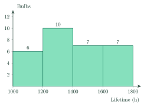
Một nhà máy kiểm tra tuổi thọ của một mẫu bóng đèn. Biểu đồ tần số biểu diễn mẫu số liệu ghép nhóm. Có tất cả bao nhiêu bóng đèn?
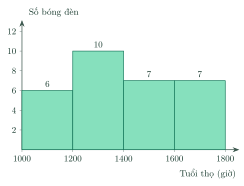
Answer: b. Add the heights of all the bars: \(6+10+7+7=30\).
Đáp án b. Cộng chiều cao của tất cả các cột: \(6+10+7+7=30\).
An electricity company recorded the monthly electricity use of households in a street. Based on the histogram, the relative frequency of the group \([250;\,300)\) is…
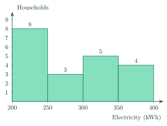
Công ty điện lực ghi lại lượng điện tiêu thụ hằng tháng của các hộ gia đình một con phố. Dựa vào biểu đồ tần số, tần số tương đối của nhóm \([250;\,300)\) là…
Answer: b. \(\dfrac{3}{20}\cdot100\%=15\%\).
Đáp án b. \(\dfrac{3}{20}\cdot100\%=15\%\).
A student grouped the score of some students as \([20;\,25),\ [25;\,30),\ [30;\,40),\ [40;\,45)\). What is wrong with this grouping?
Một bạn ghép nhóm điểm số của một số học sinh thành \([20;\,25),\ [25;\,30),\ [30;\,40),\ [40;\,45)\). Cách ghép nhóm này sai ở đâu?
Answer: d. The third group is twice as wide as the others.
Đáp án d. Nhóm thứ ba rộng gấp đôi các nhóm còn lại.
| Waiting (min) | \([0;\,5)\) | \([5;\,10)\) | \([10;\,15)\) | \([15;\,20)\) | Total |
|---|---|---|---|---|---|
| Customers | \(11\) | \(6\) | \(7\) | \(8\) | \(n=32\) |
| Thời gian chờ (phút) | \([0;\,5)\) | \([5;\,10)\) | \([10;\,15)\) | \([15;\,20)\) | Cộng |
|---|---|---|---|---|---|
| Số khách hàng | \(11\) | \(6\) | \(7\) | \(8\) | \(n=32\) |
Answer: c. The new group joins \([10;\,15)\) and \([15;\,20)\): \(7+8=15\).
Đáp án c. Nhóm mới gộp \([10;\,15)\) và \([15;\,20)\): \(7+8=15\).
| Score | \([10;\,15)\) | \([15;\,20)\) | \([20;\,25)\) | \([25;\,30)\) |
|---|---|---|---|---|
| Class A | \(2\) | \(11\) | \(12\) | \(7\) |
| Class B | \(5\) | \(2\) | \(7\) | \(10\) |
| Điểm | \([10;\,15)\) | \([15;\,20)\) | \([20;\,25)\) | \([25;\,30)\) |
|---|---|---|---|---|
| Lớp A | \(2\) | \(11\) | \(12\) | \(7\) |
| Lớp B | \(5\) | \(2\) | \(7\) | \(10\) |
Answer: c. Class A: \(\dfrac{19}{32}\approx59.4\%\); class B: \(\dfrac{17}{24}\approx70.8\%\). Compare percentages, not counts.
Đáp án c. Lớp A: \(\dfrac{19}{32}\approx59{,}4\%\); lớp B: \(\dfrac{17}{24}\approx70{,}8\%\). Cần so sánh tỉ lệ, không so sánh số lượng.
D. Self-practice: Multiple ChoiceD. Tự luyện: trắc nghiệm
The score values (points) of 9 students were recorded: \(26;\ 30;\ 25;\ 29;\ 29;\ 31;\ 31;\ 23;\ 22\). The data are put into the groups \([20;\,25),\ [25;\,30),\ [30;\,35)\). What is the frequency of the group \([30;\,35)\)?
Ghi lại điểm số (điểm) của 9 học sinh: \(26;\ 30;\ 25;\ 29;\ 29;\ 31;\ 31;\ 23;\ 22\). Chia số liệu vào các nhóm \([20;\,25),\ [25;\,30),\ [30;\,35)\). Tần số của nhóm \([30;\,35)\) là bao nhiêu?
Answer: a. Count the values \(v\) with \(30\le v\lt 35\) (the value 30 belongs to the group starting at 30): \(3\).
Đáp án a. Đếm các giá trị \(v\) với \(30\le v\lt 35\) (giá trị 30 thuộc nhóm bắt đầu từ 30): \(3\).
The smallest age of some employees is 32 years and the largest is 63 years. The data are grouped as \([30;\,35),\ [35;\,40),\dots\) (all groups of width 5). How many groups are needed?
Tuổi nhỏ nhất của một số nhân viên là 32 tuổi, lớn nhất là 63 tuổi. Ghép nhóm số liệu thành \([30;\,35),\ [35;\,40),\dots\) (các nhóm cùng độ rộng 5). Cần bao nhiêu nhóm?
Answer: b. The groups start at 30; the last group must contain 63: \([60;\,65)\). That is \(7\) groups.
Đáp án b. Các nhóm bắt đầu từ 30; nhóm cuối phải chứa 63: \([60;\,65)\). Vậy cần \(7\) nhóm.
| Height (cm) | \([140;\,150)\) | \([150;\,160)\) | \([160;\,170)\) | \([170;\,180)\) | Total |
|---|---|---|---|---|---|
| Relative frequency | \(18\%\) | \(x\) | \(16\%\) | \(46\%\) | \(100\%\) |
| Chiều cao (cm) | \([140;\,150)\) | \([150;\,160)\) | \([160;\,170)\) | \([170;\,180)\) | Cộng |
|---|---|---|---|---|---|
| Tần số tương đối | \(18\%\) | \(x\) | \(16\%\) | \(46\%\) | \(100\%\) |
Answer: b. \(x=100\%-(\text{other groups})=20\%\), so the frequency is \(20\%\cdot50=10\).
Đáp án b. \(x=100\%-(\text{các nhóm còn lại})=20\%\) nên tần số là \(20\%\cdot50=10\).
An electricity company recorded the monthly electricity use of households in a street. The histogram shows the grouped data. How many households are there in total?
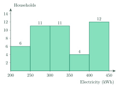
Công ty điện lực ghi lại lượng điện tiêu thụ hằng tháng của các hộ gia đình một con phố. Biểu đồ tần số biểu diễn mẫu số liệu ghép nhóm. Có tất cả bao nhiêu hộ gia đình?
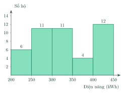
Answer: c. Add the heights of all the bars: \(6+11+11+4+12=44\).
Đáp án c. Cộng chiều cao của tất cả các cột: \(6+11+11+4+12=44\).
The monthly incomes (in million VND) of the workers in a workshop are grouped as follows. Based on the histogram, the relative frequency of the group \([12;\,14)\) is…
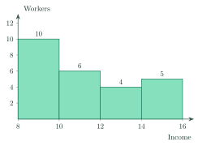
Thu nhập hằng tháng (triệu đồng) của công nhân một xưởng được ghép nhóm như sau. Dựa vào biểu đồ tần số, tần số tương đối của nhóm \([12;\,14)\) là…
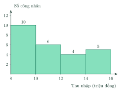
Answer: c. \(\dfrac{4}{25}\cdot100\%=16\%\).
Đáp án c. \(\dfrac{4}{25}\cdot100\%=16\%\).
A student grouped the waiting time of some customers as \([10;\,15],\ [15;\,20],\ [20;\,25],\ [25;\,30]\). What is wrong with this grouping?
Một bạn ghép nhóm thời gian chờ của một số khách hàng thành \([10;\,15],\ [15;\,20],\ [20;\,25],\ [25;\,30]\). Cách ghép nhóm này sai ở đâu?
Answer: d. The closed groups share their ends, e.g. 15 is in two groups.
Đáp án d. Các nhóm đóng có chung đầu mút, chẳng hạn 15 thuộc hai nhóm.
| Time (min) | \([0;\,5)\) | \([5;\,10)\) | \([10;\,15)\) | \([15;\,20)\) | Total |
|---|---|---|---|---|---|
| Students | \(8\) | \(16\) | \(14\) | \(12\) | \(n=50\) |
| Thời gian (phút) | \([0;\,5)\) | \([5;\,10)\) | \([10;\,15)\) | \([15;\,20)\) | Cộng |
|---|---|---|---|---|---|
| Số học sinh | \(8\) | \(16\) | \(14\) | \(12\) | \(n=50\) |
Answer: c. The new group joins \([10;\,15)\) and \([15;\,20)\): \(14+12=26\).
Đáp án c. Nhóm mới gộp \([10;\,15)\) và \([15;\,20)\): \(14+12=26\).
| Height (cm) | \([150;\,155)\) | \([155;\,160)\) | \([160;\,165)\) | \([165;\,170)\) |
|---|---|---|---|---|
| Class A | \(12\) | \(11\) | \(10\) | \(9\) |
| Class B | \(4\) | \(6\) | \(12\) | \(2\) |
| Chiều cao (cm) | \([150;\,155)\) | \([155;\,160)\) | \([160;\,165)\) | \([165;\,170)\) |
|---|---|---|---|---|
| Lớp A | \(12\) | \(11\) | \(10\) | \(9\) |
| Lớp B | \(4\) | \(6\) | \(12\) | \(2\) |
Answer: d. Class A: \(\dfrac{19}{42}\approx45.2\%\); class B: \(\dfrac{14}{24}\approx58.3\%\). Compare percentages, not counts.
Đáp án d. Lớp A: \(\dfrac{19}{42}\approx45{,}2\%\); lớp B: \(\dfrac{14}{24}\approx58{,}3\%\). Cần so sánh tỉ lệ, không so sánh số lượng.
D. Self-practice: Multiple ChoiceD. Tự luyện: trắc nghiệm
The waiting time values (minutes) of 10 customers were recorded: \(7;\ 1;\ 3;\ 2;\ 10;\ 14;\ 6;\ 7;\ 13;\ 1\). The data are put into the groups \([0;\,5),\ [5;\,10),\ [10;\,15)\). What is the frequency of the group \([5;\,10)\)?
Ghi lại thời gian chờ (phút) của 10 khách hàng: \(7;\ 1;\ 3;\ 2;\ 10;\ 14;\ 6;\ 7;\ 13;\ 1\). Chia số liệu vào các nhóm \([0;\,5),\ [5;\,10),\ [10;\,15)\). Tần số của nhóm \([5;\,10)\) là bao nhiêu?
Answer: d. Count the values \(v\) with \(5\le v\lt 10\) (the value 10 belongs to the group starting at 10): \(3\).
Đáp án d. Đếm các giá trị \(v\) với \(5\le v\lt 10\) (giá trị 10 thuộc nhóm bắt đầu từ 10): \(3\).
The smallest score of some students is 12 points and the largest is 33 points. The data are grouped as \([10;\,15),\ [15;\,20),\dots\) (all groups of width 5). How many groups are needed?
Điểm số nhỏ nhất của một số học sinh là 12 điểm, lớn nhất là 33 điểm. Ghép nhóm số liệu thành \([10;\,15),\ [15;\,20),\dots\) (các nhóm cùng độ rộng 5). Cần bao nhiêu nhóm?
Answer: c. The groups start at 10; the last group must contain 33: \([30;\,35)\). That is \(5\) groups.
Đáp án c. Các nhóm bắt đầu từ 10; nhóm cuối phải chứa 33: \([30;\,35)\). Vậy cần \(5\) nhóm.
| Time (min) | \([5;\,10)\) | \([10;\,15)\) | \([15;\,20)\) | \([20;\,25)\) | Total |
|---|---|---|---|---|---|
| Relative frequency | \(14\%\) | \(x\) | \(16\%\) | \(40\%\) | \(100\%\) |
| Thời gian (phút) | \([5;\,10)\) | \([10;\,15)\) | \([15;\,20)\) | \([20;\,25)\) | Cộng |
|---|---|---|---|---|---|
| Tần số tương đối | \(14\%\) | \(x\) | \(16\%\) | \(40\%\) | \(100\%\) |
Answer: a. \(x=100\%-(\text{other groups})=30\%\), so the frequency is \(30\%\cdot50=15\).
Đáp án a. \(x=100\%-(\text{các nhóm còn lại})=30\%\) nên tần số là \(30\%\cdot50=15\).
A farm weighed a sample of eggs before packing them. The histogram shows the grouped data. How many eggs are there in total?
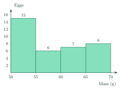
Một trang trại cân mẫu các quả trứng trước khi đóng gói. Biểu đồ tần số biểu diễn mẫu số liệu ghép nhóm. Có tất cả bao nhiêu quả trứng?
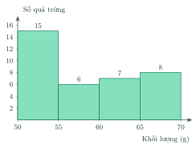
Answer: b. Add the heights of all the bars: \(15+6+7+8=36\).
Đáp án b. Cộng chiều cao của tất cả các cột: \(15+6+7+8=36\).
A survey asked teenagers how long they use a phone each day. Based on the histogram, the relative frequency of the group \([30;\,60)\) is…
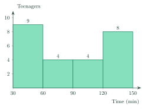
Khảo sát thời gian dùng điện thoại mỗi ngày của học sinh. Dựa vào biểu đồ tần số, tần số tương đối của nhóm \([30;\,60)\) là…
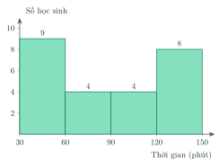
Answer: b. \(\dfrac{9}{25}\cdot100\%=36\%\).
Đáp án b. \(\dfrac{9}{25}\cdot100\%=36\%\).
A student grouped the age of some employees as \([25;\,35),\ [35;\,45),\ [45;\,65),\ [65;\,75)\). What is wrong with this grouping?
Một bạn ghép nhóm tuổi của một số nhân viên thành \([25;\,35),\ [35;\,45),\ [45;\,65),\ [65;\,75)\). Cách ghép nhóm này sai ở đâu?
Answer: b. The third group is twice as wide as the others.
Đáp án b. Nhóm thứ ba rộng gấp đôi các nhóm còn lại.
| Lifetime (h) | \([1200;\,1400)\) | \([1400;\,1600)\) | \([1600;\,1800)\) | \([1800;\,2000)\) | Total |
|---|---|---|---|---|---|
| Bulbs | \(3\) | \(4\) | \(4\) | \(9\) | \(n=20\) |
| Tuổi thọ (giờ) | \([1200;\,1400)\) | \([1400;\,1600)\) | \([1600;\,1800)\) | \([1800;\,2000)\) | Cộng |
|---|---|---|---|---|---|
| Số bóng đèn | \(3\) | \(4\) | \(4\) | \(9\) | \(n=20\) |
Answer: b. The new group joins \([1600;\,1800)\) and \([1800;\,2000)\): \(4+9=13\).
Đáp án b. Nhóm mới gộp \([1600;\,1800)\) và \([1800;\,2000)\): \(4+9=13\).
| Score | \([10;\,15)\) | \([15;\,20)\) | \([20;\,25)\) | \([25;\,30)\) |
|---|---|---|---|---|
| Class A | \(10\) | \(5\) | \(8\) | \(7\) |
| Class B | \(3\) | \(5\) | \(7\) | \(7\) |
| Điểm | \([10;\,15)\) | \([15;\,20)\) | \([20;\,25)\) | \([25;\,30)\) |
|---|---|---|---|---|
| Lớp A | \(10\) | \(5\) | \(8\) | \(7\) |
| Lớp B | \(3\) | \(5\) | \(7\) | \(7\) |
Answer: c. Class A: \(\dfrac{20}{30}\approx66.7\%\); class B: \(\dfrac{19}{22}\approx86.4\%\). Compare percentages, not counts.
Đáp án c. Lớp A: \(\dfrac{20}{30}\approx66{,}7\%\); lớp B: \(\dfrac{19}{22}\approx86{,}4\%\). Cần so sánh tỉ lệ, không so sánh số lượng.
8Common MistakesLỗi thường gặp
Putting a value in the wrong group. A value equal to the right end belongs to the next group.
Xếp sai nhóm. Giá trị bằng đầu mút phải thuộc nhóm kế tiếp.
Mixing frequency and relative frequency. Relative frequency is a percentage of the total.
Nhầm tần số với tần suất. Tần suất là phần trăm so với tổng.
Cumulative frequency of the wrong group. “Less than 15” means all groups before 15.
Sai tần số tích lũy. “Nhỏ hơn 15” nghĩa là cộng mọi nhóm đứng trước 15.
Using an end value as the midpoint. The midpoint is \(\dfrac{a+b}{2}\).
Dùng đầu mút làm giá trị đại diện. Giá trị đại diện là \(\dfrac{a+b}{2}\).
Groups of different widths. Keep equal widths when drawing a histogram.
Các nhóm có độ rộng khác nhau. Khi vẽ biểu đồ cột nên giữ độ rộng bằng nhau.
9Lesson SummaryTổng kết
Grouped data: groups \([a;b)\), frequency \(n_i\), sample size \(n\).
Số liệu ghép nhóm: nhóm \([a;b)\), tần số \(n_i\), cỡ mẫu \(n\).
Relative frequency \(f_i=\dfrac{n_i}{n}\cdot100\%\); cumulative frequency adds up.
Tần suất \(f_i=\dfrac{n_i}{n}\cdot100\%\); tần số tích lũy là cộng dồn.
Midpoint \(x_i=\dfrac{a+b}{2}\).
Giá trị đại diện \(x_i=\dfrac{a+b}{2}\).
Key English words: grouped data, frequency, relative frequency, histogram.
Từ tiếng Anh cần nhớ: grouped data, frequency, relative frequency, histogram.